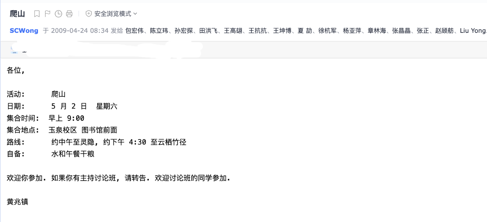

杨亚萍: 纪念黄老师
文 / 杨亚萍（2005级数学系）
我大三的时候跟着老黄上讨论班。那时身边的同学们有的已经决定出国深造，有 的打算保研，有的准备毕业找工作，有的无忧无虑，也有的像我一样有点迷茫。 在排除了不适合我的选项（出国，工作）后，我打开了中科院保研的网站。
讨论班间隙，我跟老黄说我打算去中科院读研究生，但是保研对英语的要求是 6 级以上。我那时英语 4 级成绩都很低，问老黄有什么建议吗。老黄说你打算做基 础数学的话还是出国吧。老黄问我你为什么不出国。我说我英语不好，现在时间 也来不及了。而且出国得花很多钱吧，家里条件也不太好。老黄跟我讲他好多在 国外读博的学生英语都很差。 而且基础数学不需要准备 GRE, 潘宣余和杨田考 GRE 的时候都选 C。出国读博可以做助教，工资基本都够生活了。就是机票得花 点钱，但是我可以借你。
跟老黄聊天真是颠覆了我的认知。第二天他又找到我说跟潘宣余了解了一下情况， 现在考英语申请学校还来的及。他让我去准备一下托福，GRE 就不要准备了。于 是我赶鸭子上架，先去办了银行卡，预约了英语考试，考托福还坐火车去了趟山 东潍坊，GRE机考去了趟古城西安（浙大考场已满）。
- 小插曲1: 考托福口语的时候，指示是 “Start to speak after the beep”，我 当时要么太紧张，要么没听懂。对着电脑讲着讲着，听见耳机里很响的一声 “Beeeeeeep!” 托福成绩（11月15日，2008）：阅读 25/30，听力26/30，口语 15/30，写作 17/30，总分 83/120.
- 小插曲2: 考 GRE 笔试当天，等出租车的时候，碰到了张正和不认识的浙大同学， 我们几个人拼了车。我跟张正说我要裸考了，张正问我 GRE 都有什么题型啊。 我一个打算全选 C 的跟张正解释都有些什么题。一起拼车的同学估计很震惊 和无语，全程无话。
GRE 成绩是：语文 Verbal 270/800，数学 Quantity 790/800，作文 3.5/6。成 绩都出来后，老黄说你再去考一次托福吧。于是我就又考了第二次，这次有了经 验，认真准备了口语和写作。托福成绩（1月28日，2009）：阅读20/30，听力 18/30，口语20/30，写作25/30，总分还是83/120. 老黄说把你两次考的各项高 分加起来，考的还不错。
老黄花了很多时间帮我修改 CV 和Personal Statement。写了推荐信，帮我选了 几所学校，有 UIUC，Indiana University-Bloomington, Ohio State University, University of Minnesota, 香港科大，和 Northeastern University. 等待 offer 期间，老黄教我如何与不认识的教授发邮件，还帮我联 系了他之前的学生，包括当时未曾谋面的陈豪杰学长和谢知章学长。
一番周折后，我和赵顾舫都收到了 Northeastern University 的 offer. 临行 前某天老黄主动找到我，给了我个厚厚的信封，里面有一万块钱，说是给我买机 票用的。后来我第一次回国时还了老黄的钱。当时神经大条，还的美元，不知道 有没有给他添麻烦。秉承黄派子弟的作风，我们研究生第一个学期先过了 qualifying exams, 这样就能选 Topics 的课，也有时间去 Harvard 和 MIT 蹭 课。老黄会告诉我们他有哪些学生申请了 Northeastern University，除了介绍 一下学生的基本情况外，总会嘱咐一句“能帮就尽量帮一下吧”。渐渐地， Northeastern 也在继 OSU 和 Stony Brook之后，成了黄派子弟的聚集地。美国 东北地区（Boston, New York, Stony Brook, Amherst, …) 学术会议频繁， 我们还赶上了每年举行两次的 AGNES (Algebraic Geometry Northeastern Series). 每次开会黄派学生众多，浩浩荡荡，蹭会蹭车蹭饭。记得每次都是朱 一在组织，现在各种事情也是朱一在组织。（辛苦了，朱学长。）
一些零星的片段：
- 老黄的课规定是作业必须在上课前放在讲桌上，否则就会被扔出去。后来又加 了一条：发现两份作业雷同，不管抄与被抄，都是零分（顾舫的点集拓扑作业 好像要么是满分，要么是零分）。
- 老黄教我们做报告：老黄说做报告时，不要把书上的句子照抄一遍。教我们用 数学符号简化板书。老黄是第一个告诉我 “定义很重要”的人。
- 老黄纠正我们的英语发音: 他说“W”应该读作 “double u”, 非常好记，“W”看 起来是两个 “U”拼在一起。
- 老黄不收礼物：早年有个学生重修老黄的课，要毕业就差这么一门课。考了58 分左右，拿着很贵的烟给他。老黄烟没收，课也没让过。还有某年，有学生在 教师节送了他康乃馨，他转身就把花给了我。最近翻了翻往来的邮件：有关于 讨论班的，有往届学生暑期回国作报告的，有通知去他办公室领书的，有大量 帮我修改PS预约时间的, 还有份邮件字里行间安慰的 “You still have a chance with the applications because of your gender. Just concentrate in the TOEFL in the next few days.” 也有周末去爬山的:

老黄初见时很严厉，越靠近越温柔。
最后，以我朋友圈的文字结尾：何其有幸，上过老黄的点集拓扑，范畴学，上过黄老师的讨论班。被师兄师姐们带过，也带过师弟师妹们。老跟着老黄蹭饭，也在老黄办公室吸过二手烟。记着老黄的自行车和墨镜，港式口音和笑话。黄老师一路走好。